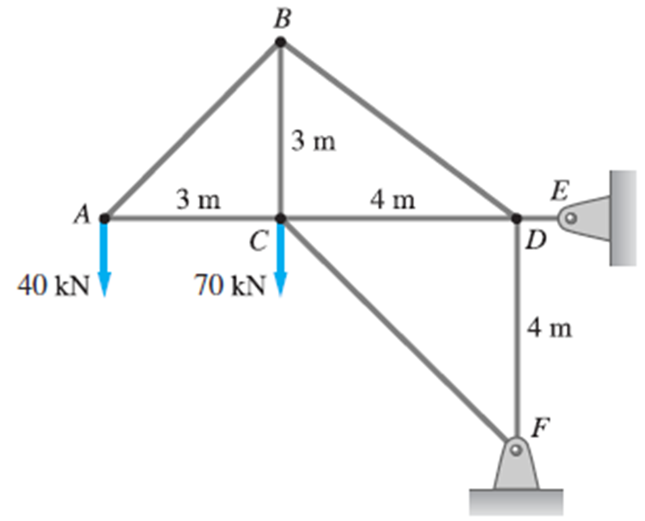
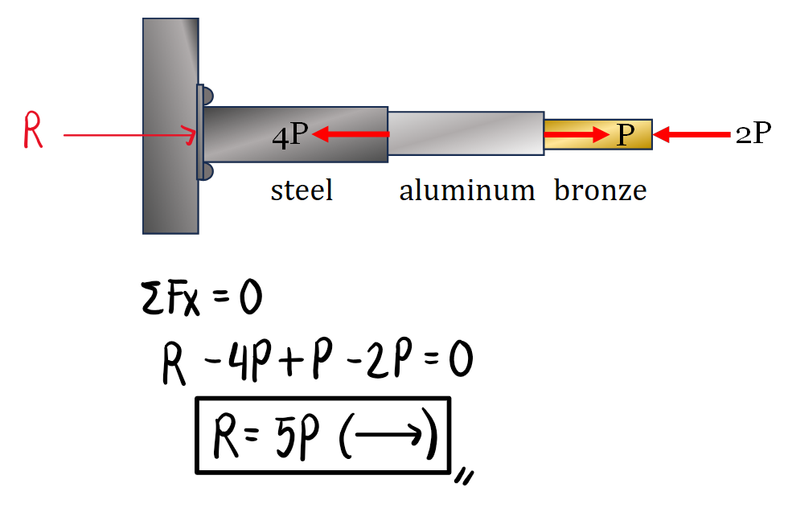
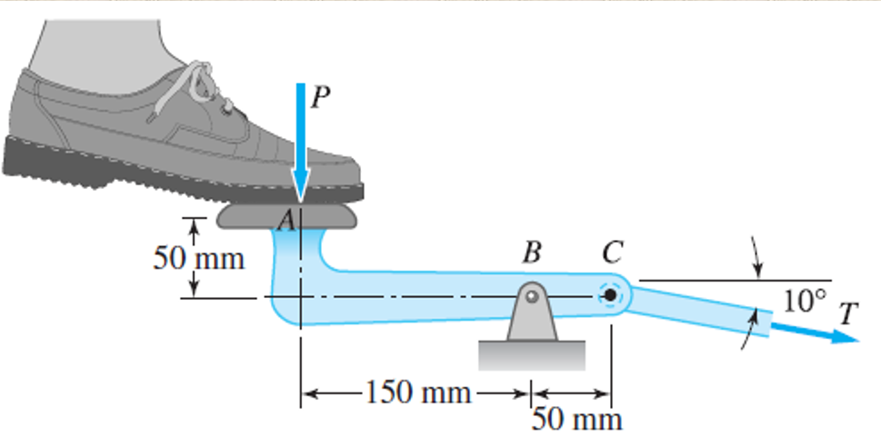

A hollow steel tube with an inside diameter of 100mm must carry a tensile load of 400kN.
a. Determine the outside diameter of the tube if the maximum working stress (yield stress) of the material is 120MN/m2.
b. Using a factor of safety of 1.5 applied to the maximum/yield stress, what should be the outside diameter of the tube?


The uniform 300-lb bar AB carries a 500-lb vertical force at A. The bar is supported by a pin at B and the 0.5-in. diameter cable CD. Find the stress in the cable.


The tension in cable CD is denoted as TCD. Its corresponding component along x crosses point B, so it will not cause any rotation about that point.


Find the stresses in members BC, BD, and CF for the truss shown. Indicate whether tension or compression. The cross-sectional area of members in tension is 1400mm2, while 1500mm2 for those in compression.


The column consists of a wooden post and a concrete footing, separated by a steel bearing plate. Find the maximum safe value of the axial load P if the working stresses are 1000psi for wood and 450 psi for concrete.


Determine the largest weight W that can be supported by the two wires AB and AC: The working stresses are 100 MPa for AB and 150 MPa for AC. The cross-sectional areas of AB and AC are 400 mm2 and 200 mm2, respectively.


In this solution, we sum up forces along x and y at joint A and set them to zero to establish equilibrium. Then, we use Mode → Equation → Two Equations Two Unknowns. While W is still unknown, we may substitute a value of 1 so that we can obtain the ratio of W that AB and AC would carry for every unit load.
Alternatively, we can obtain the result by using a force triangle.
An aluminum rod is rigidly attached between a steel rod and a bronze rod as shown. Axial loads are applied at the positions indicated. Find the If P = 20kN, determine the stress in each member.
Ast=500mm2
Aal=400mm2
Abr=200mm2


First, we solve the reaction at the fixed support since the total system is not in equilibrium.
To determine the axial force in each member, we can pass a cutting section at any point between each member. Then, we can analyze any of the sides of the cut, be it the right side or left side. Here, we show the calculations considering both the left side and right side to demonstrate that the resulting axial forces will be the same.

Alternatively, we can draw the axial force diagram. Note that we draw this either from left to right or top to bottom along the member. The axial force diagram describes the axial force at any given point.
Then, we denote tension as positive while compression as negative. In the illustration below, a force acting to the right would mean compression as it is acting toward the member, and will thus take a negative sign. Forces to the left will take on a positive sign as they are acting away from the member (from a left to right orientation). Here, we observe that steel carries 5P (compression), aluminum carries 1P (compression), and bronze carries 2P (compression), which is the same as the results when using cutting sections. Finally, we solve the corresponding stresses in each section.
Find the maximum allowable value of P for the column. The cross-sectional areas and working stresses are shown in the figure.


In this solution, we draw the axial force diagram to determine the axial force in each member. Then, we draw the diagram from top to bottom and indicate downward forces as compression as they are acting toward the body, while upward forces as tension as they are acting away from the body. We will be able to solve three values of P based on each member, and we choose the safest load, which is the least value.


Determine the mass of the heaviest uniform cylinder that can be supported in the position shown without exceeding a stress of 50MPa in cable BC. Neglect friction and the weight of bar AB. The cross-sectional area of BC is 100mm2.


The 1000-kg uniform bar AB is suspended from two cables AC and BD, each with cross-sectional area 400mm2. Find the magnitude P and location x of the largest additional vertical force that can be applied to the bar. The stresses in AC and BD are limited to 100MPa and 50MPa, respectively.
We first obtain the maximum forces in cables AC and BD. Then, we determine the value of the largest additional vertical force, P, by summing up vertical forces equal to zero. Finally, as we take moments about A, we will be able to calculate the distance x from point A where the largest additional vertical force may be applied.

The homogeneous 6000-lb bar ABC is supported by a pin at C and a cable that runs from A to B around the frictionless pulley at D. Find the stress in the cable if its diameter is 0.6in.
Since cable ABD wraps around a frictionless pulley, the tension throughout the cable will be the same. We pass a cutting section to reveal the internal forces in AD and BD, which will both have a value of T.
The water supply pipe shown is suspended from a cable using a series of closed and equally spaced hangers. The length of the pipe is supported by the cable is 40 m. The total weight of the pipe filled with water is 20 KN/m. If the sag of the cable at mid length is 4 m. Find the maximum axial stress (MPa) if the cable diameter is 75 mm.
Here, we first cut the cable at the lowest point (at the middle since the parabolic cable is symmetrical). Then, we sum up moments about the hinged support to obtain the value of the minimum tension, which is the resulting horizontal force at the minimum point. To obtain the maximum axial stress, we need to compute the maximum tension in the cable. This occurs at the support, Tmax. To obtain this value, we draw a force triangle from the reactions of the hinged support, and the resultant force is the maximum tension in the cable. After which, we calculate the stress based on this maximum force.
The 1200-lb uniform plate ABCD can rotate freely about the hinge AB. The plate is supported by the cables DE and CE. If the working stress in the cables is 18 000 psi, determine the smallest safe diameter of the cables.
By symmetry, LDE and LCE and the components of their distances are equal, which effectively means that their internal forces are also equal. Thus, we denote both of their internal forces as a single variable, T. Next, we sum up moments about the line AB to exclude the reactions at A and B in our equation. After which, we can obtain the value of T and solve the corresponding axial stress in the cable.
Determine the largest weight W that can be supported safely by the structure shown in the figure. The working stresses are 16,000 psi for the steel cable AB and 720 psi for the wood strut BC. Neglect the weight of the structure.
In this problem, we can obtain two values of P: based on the wood strut and based on the steel cable. The largest weight W, that may be safely applied is the least load, so that both the strut and the cable will not fail. The steel cable can handle a weight of 10,666.67lb, while the wood strut can only handle a weight of 9,216lb. Therefore, the capacity of the wood strut governs, and we must only apply up to 9,216lb so that both members are safe.
What minimum force is required to punch a 20-mm-diameter hole in a plate that is 25mm thick? The shear strength of the plate is 340MN/m2. Factor of safety = 1.5.

Shear stress formula:
$\tau = \dfrac{V}{A}$
Given: $\tau = 340 \text{ MPa}$
Substitute the values:
$340~\text{MPa} = \dfrac{V}{\pi d (t)}$
$340~\text{MPa} = \dfrac{V}{\pi (20)(25)}$
Therefore, $V \ge 534.07~\text{kN}$
The answer is 535kN since it is greater than 534.07.
A hole is to be punched out of a plate having a shearing strength of 40ksi. The compressive stress in the punch is limited to 50ksi.
a. Compute the maximum thickness of the plate in which a hole 2.5 inches in diameter can be punched.
b. If the plate is 0.25 inch thick, determine the diameter of the smallest hole that can be punched.
For the assembly shown, assume bar AB to be weightless.
a. Determine the average shear stress (in MPa) in the pin at A if the pin diameter is 20mm.
b. Determine the average shear stress (in MPa) in the pin at C if the pin diameter is 30mm.
c. If beam AB has a net area of 1800mm2, find the average axial stress in MPa.
The rectangular wood panel is formed by gluing together two boards along the 30-degree seam as shown in the figure. Determine the largest axial force P that can be carried safely by the panel if the working stress for the wood is 1120psi, and the normal and shear stresses in the glue are limited to 700psi and 450psi, respectively.
Assume that a 20-mm-diameter rivet joins the plates that are each 110 mm wide. P=20kN
a. Determine the shear stress on each of the bolt assuming that the applied load is uniformly distributed among the rivets.
b. Compute the largest average tensile stress in the plates.
Four bolts in double shear consists of eight shear areas as shown in the free body diagram.
For the largest average tensile stress, we consider the tensile area that discounts the area of the holes since they do not offer resistance to the axial force. We analyze the top and bottom plates (equal thicknesses) and the middle plate and compare which of them bears the largest tensile stress. The figure below shows the net tensile area of the top/bottom plate with a thickness of 10mm. Note that the thickness of the middle plate is 12mm, which is used in the solution below.
A key prevents relative rotation between the shaft and the pulley. If the torque, T=2200N-m is applied to the shaft, determine the smallest safe dimension, b, if the working shear stress for the key is 60MPa.
The 7/8-in.-diameter pins at A and C that support the structure are in single shear. Find the largest force F that can be applied to the structure if the working shear stress for these pins is 5000psi. Neglect the weights of the members.
Bar AB weighs 0.2Mg/m and is supported by a smooth wall at A and by a pin at B that is in double shear. Determine the diameter of the smallest pin that can be used if its working shear stress is 60MPa.
The bell crank, which is in equilibrium under the forces shown in the figure, is supported by a 20-mm-diameter pin at D that is in double shear. Determine (a) the required diameter of the connecting rod AB, given that its tensile working stress is 100MPa; and (b) the shear stress in the pin.
Compute the maximum force, P, that can be applied to the foot pedal. The 6-mm.-diameter pin at B is in single shear, and its working shear stress is 28MPa. The cable attached at C has a diameter of 3mm, and a working normal stress of 140MPa.
The right-angle bar is supported by a pin at B and a roller at C. What is the maximum safe value of the load P that can be applied if the shear stress in the pin is limited to 20000psi? The ¾-in.-diameter pin is in double shear.
The bar AB is supported by a frictionless inclined surface at A and a 7/8-in.-diameter pin at B that is in double shear. Determine the shear stress in the pin when the vertical 2000-lb force is applied. Neglect the weight of the bar.
The glue is shown below to illustrate the area over which it is applied.
Cutting along the plywood gussets at the center, we can draw the following FBD and the resulting internal forces on the plywood gussets are both P/2.
If the diameter of the rivets that join the plates is d=20mm and the working stresses are 120MPa for bearing in the plate, 60MPa for shear in the rivet, and 150MPa for tensile stress in the plate, determine the minimum safe thickness of each plate.
The plate welded to the end of the I-beam is fastened to the support with four 10-mm-diameter bolts (two on each side). Assuming that the load is equally divided among the bolts, determine the normal and shear stresses in a bolt.
The 20-mm-diameter bolt fastens two wooden planks together. The nut is tightened until the tensile stress in the bolt is 150 MPa. Find the smallest safe diameter d of the washers if the working bearing stress for wood is 13 MPa.
A square hollow steel strut with a wall thickness of 10 mm is pin connected to two gusset plates, having a thickness of 20 mm which are welded to the base plate having a thickness of 25 mm fastened to a concrete base by 4-16mm√ò anchor bolts. Diameter of the pin is 20 mm. Compressive load is P and ùúÉ= 60¬∞.

Side View:
a. Compute the maximum compressive load P (kN) if the shearing stress of the anchor bolt is limited to 200MPa and the compressive stress of the anchor bolt is limited to 100MPa.If the allowable shearing stress of the bolts is 485MPa, the allowable bearing stress of bolts on the plate is 540MPa, and the allowable tension rupture strength is 225MPa, determine the maximum safe value of P that can be applied. The diameter of each bolt is 16mm, the thickness of each plate is 12mm, and the width of each plate is 130mm.
Refer to the assembly shown.
a. If the diameter of the bolts is 18mm and all plates are 20mm thick, determine the bearing capacity (in kN) of the connection if the allowable bearing stress is 520MPa.
b. If P = 10kN, what is the shear stress in each of the bolt?